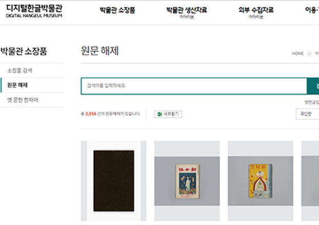
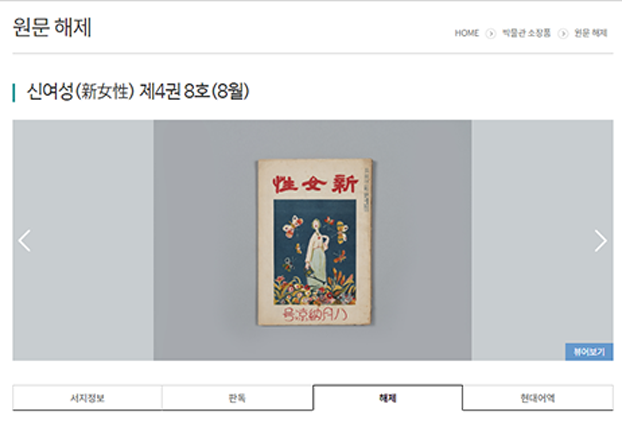
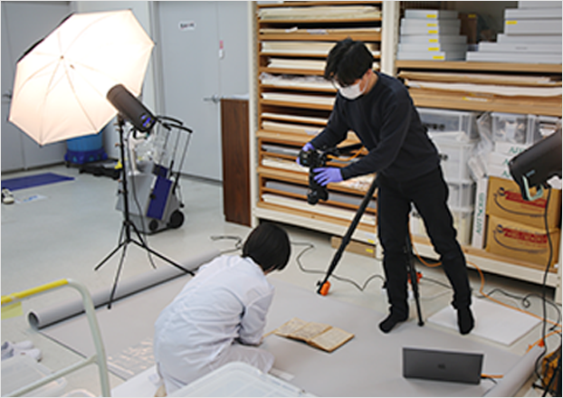
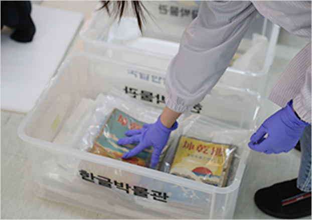
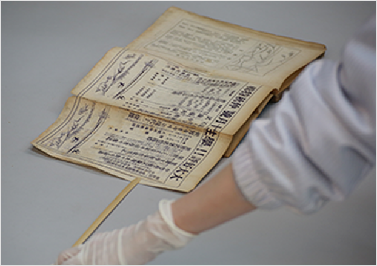
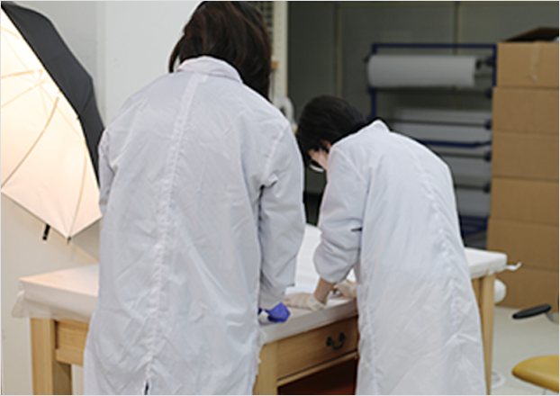
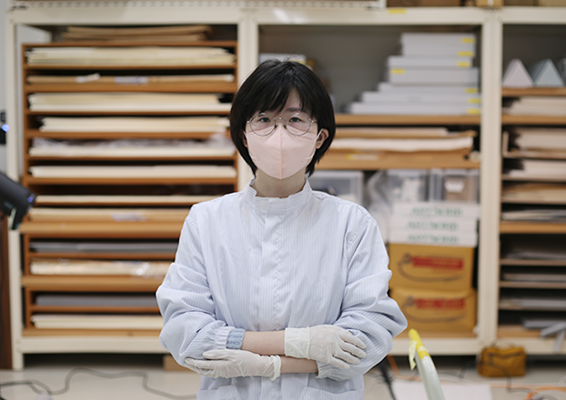

박물관은 지금
국립한글박물관 소장자료
디지털화로
한글문화유산을
전 세계에 전하다
‘소장자료 원문 사진 촬영’ 현장
원본 보존과 온라인 접근성의 결합
한글 문화자원의 새 지평을 열다
국립한글박물관은 지난 2016년부터 주요 한글 자료들을 검색하고 열람할 수 있는 디지털한글박물관을 운영하고 있습니다. 이번 ‘박물관은 지금’에서 살펴볼 ‘소장자료 원문 사진 및 해제 구축 사업’ 역시 디지털한글박물관에 올라가는 콘텐츠 중 하나입니다. 박물관 주요 소장자료의 원문 이미지를 촬영하여 온라인으로 열람할 수 있도록 제공하고 있는 것입니다.


단순히 사진만 올라가는 것은 아닙니다. 자료에 대한 전문가들의 해설을 곁들이는 것은 물론, 한글 편지와 같은 필사본 고문서의 경우 판독문과 현대어역을 함께 제공하고 있습니다. 이 사업은 소장자료의 실물 열람을 온라인 서비스로 대체함으로써, 보존의 안정성을 확보하는 동시에 한글문화자원에 대한 접근성을 높이는 데 큰 의의가 있습니다. 특히 원본의 훼손 가능성을 최소화하는 디지털 보존 기반을 마련하여 문화유산의 미래를 보장하는 중요한 발걸음이 되어주고 있습니다.
시간을 거스르는 여정
과거 한글, 현대의 기술과 만나다
수장고에 잠들어 있던 과거의 자료에 생명력을 불어넣는 일은 그리 간단하지 않습니다. 먼저 국립한글박물관 내부 논의를 거쳐 매년 디지털화할 소장자료를 선별한 후 아카이브 담당자가 목록을 정리해 소장자료 담당자에게 전달하고, 적정 온도와 습도로 유지되는 수장고 안에서 소장 자료를 꺼내옵니다. 이 자료들은 세상에 단 하나밖에 없는 것들이기 때문에 손상되지 않도록 특별한 처리를 거친 중성 상자 안에 담겨 있습니다. 사진 촬영도 통제구역에서 이뤄지며, 문화재 전문 촬영 업체와 협력해 촬영을 진행합니다.




지난 2월 21일, 한박웃음이 찾아간 곳은 근대 한글 잡지 『별건곤』의 원문 사진 촬영 현장이었습니다. ‘통제구역’이라고 적힌 두툼한 철문을 지나 신발을 갈아 신고, 환풍기로 먼지를 털어낸 후에야 입장할 수 있었습니다. 마치 특수 장비와도 같은 카메라 아래 잡지를 펼치고 사진 찍기를 반복했는데, 놀라운 것은 책장을 손 뿐만 아니라 나무 장비로도 넘긴다는 점이었습니다. 이 역시 유물 손상을 방지하기 위한 노력 중 하나입니다. 이렇게 한 달에 걸친 촬영이 끝나면 이미지 보정, 즉 노이즈 제거나 기울기 및 여백 조정 등의 수정사항을 거칩니다. 사진은 다시 박물관으로 옮겨져 누락된 부분은 없는지 검수를 거칩니다.
“한글 자료의 접근성 향상을 위해 끊임없이 노력합니다.” 정내원 학예연구원

특정 문서나 자료의 원문을 찾는 것은 때론 굉장히 어려운 일이에요. 저 역시 개인적으로 몇몇 중요한 한글 자료를 찾으려고 시도했지만, 그 과정이 쉽지 않았어요. 이런 지점에서 국립한글박물관의 원문 이미지 및 해제 구축 사업은 중요하다고 생각해요. 저희는 보다 나은 서비스를 위해 전문가들과의 자문 회의를 통해 발전 방향을 모색하기도 해요. 또한 저 스스로도 어떻게 하면 중요한 한글 자료의 접근성을 높일 수 있을지 고민하며, 저 나름의 사명감으로 임하고 있습니다. 아직 디지털한글박물관 이용자분들의 피드백을 직접 들어본 적은 없지만, 긍정적인 목소리가 들려오길 바라며 계속해서 노력하겠습니다.